Guia do Usuário
O Manual da Lista de Comandos esta disponível
aqui
Se você tiver algum problema com o DeepSkyStacker, relate-o à
lista de discussão do DeepSkyStacker hospedada em
groups.io:
https://groups.io/g/DeepSkyStacker
Introdução
Começo
rápido
Aba de Registro e
Integração
Integrando em
Batelada
Aba do Processamento
Criar uma máscara de estrela
Lista de Imagens
Pré-visualização da imagem (Edição do cometa e das estrelas)
Configurações das imagens RAW e FITS
DDP
Introdução
O objetivo deste pequeno manual é explicar as
funcionalidades, características e princípios de operação do
DeepSkyStacker.
|
A apresentação do DeepSkyStacker é muito simples e
intuitiva e todas as funcionalidades e comandos são fácilmente
acessáveis.
Logo após carregar o programa,
a tela aparece dividida em duas partes:
Do lado
esquerdo estão as Abas (separadores)que dão acesso a todos os comandos e
funcionalidades.
Do lado direito temos uma tela
maior, dependendo da Aba de configurações que está selecionada e as sub
telas associadas.
Para alterar da
presente Aba de configuração basta levar o cursor do mouse para outra aba
e acionar uma vez.
|
Se
você é um neófito na astrofotografia e quer saber mais um pouco
sobre fotografias do tipo Dark, Flat e Bias ... e como as criar ...
veja esta explicação aqui. |
|
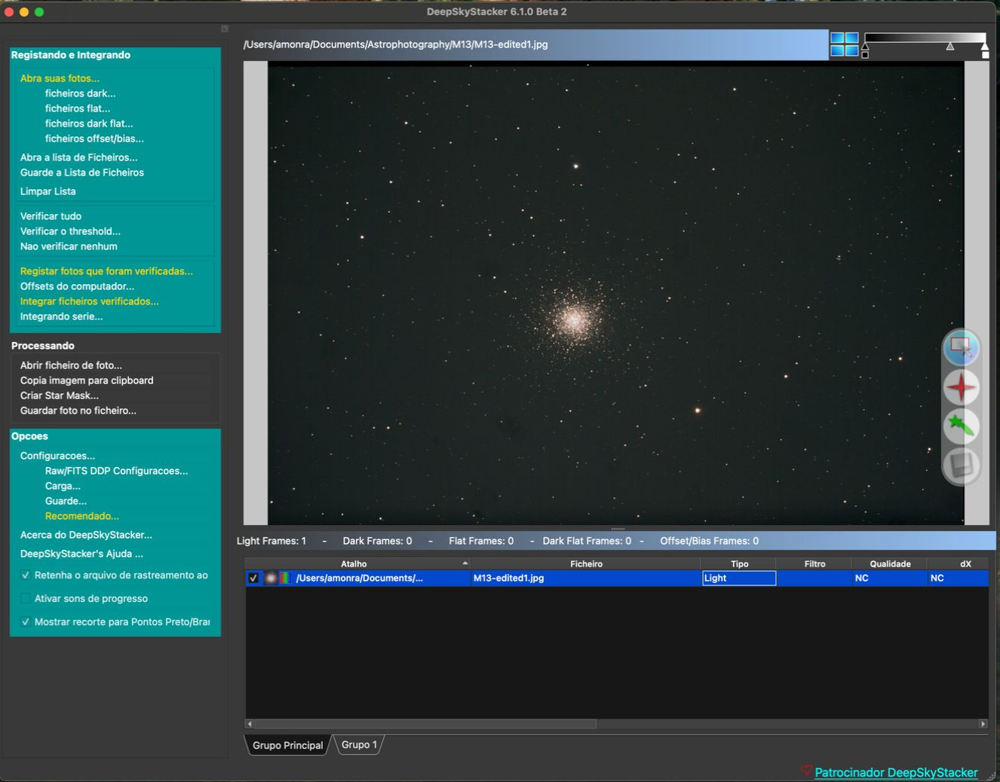 |
Começo rápido
Acabou de ter uma noite muito produtiva e agora tem
todos os arquivos fotográficos tipo Lights, Darks, Bias/Offsets e Flats
arquivados no seu PC.
Vejamos a
sequência de etapas a seguir, de acordo com a Lista de Abas do lado esquerdo da
apresentação do DeepSkyStacker.
O primeiro passo é
adicionar todas as fotografias (de acordo com o seu tipo) para a lista de
arquivos.
Para fazer isso utilize os comandos das abas do
lado esquerdo:
- Abra e adicione a lista os arquivos com
as suas fotografias astronômicas (Light Frames)
- Abrir e
adicionar os arquivos Dark
- idem para com os arquivos
Flat
- idem para com osarquivos Bias/Offset
- idem para com os arquivos Dark Flat
Quando o programa inicia o processo do registro faz uma
"ordenação dos fotogramas antes de os registrar" e apresenta a verificação em
baixo na caixa de diálogo de todo esse processo.
Se usar arquivos RAW (altamente recomendados), verifique as
configurações do RAW DDP para começar o processo do registro.
Agora você pode ir dormir com a certeza que após uma boa
noite verá os resultados do processo na tela do computador.
Nota Importante : mesmo que o seu computador bloqueie, o
resultado é automaticamente salvo no arquivo : AutoSave.tif.
Aba de registrar e integrar
A Aba
de registro e integração apresenta todos os comandos e funcionalidades para os
processos de registro e integracao das imagens.
|
Desta Aba, pode adicionar imagens fotográficas de cada
tipo (Light, Dark, Flat e Bias/Offset) para a lista, salvar e restaurar a
lista de arquivos, verificar imagens prévias e iniciar o registro ou
processo de integração
|
É
possivel adicionar os arquivos na lista por simples arrastar e
soltar os arquivos a partir do windows explorer.
Será
questionado sobre o tipo de arquivo (Light, Dark, Flat e
Bias/Offset) antes da transferência dos arquivos para a
lista. |
Na área do lado direito da
tela aparece a Lista de Imagens Fotográficas e a Pré-visualização da Imagem .
Na parte inferior da lista de
imagens fotográficas exite uma linha com uma série de Abas que dão acesso
a um determinado grupo de arquivos. Se clicar numa dessas Abas será
apresentada a listagem dos arquivos associados ao grupo.
Para saber mais acerca dos arquivos de grupo consulte
o manual de Detalhes Técnicos aqui.
No canto superior do lado direito, existe uma régua de
escala para alterar o valor gamma da imagem fotográfica visualizada, o que
pode ser útil para visualizar objetos astrônomicos tênues ou
esmaecidos.
Naturalmente não ocorre qualquer
modificação da imagem visualizada, sendo apenas um pequeno truque para
melhor visualizar os detalhes da imagem.
|
É
possivel iniciar automaticamente o processo de integração, depois do
processo de registro das imagens, fornecendo a percentagem de
fotografias que serão mantidas. As melhores imagens, baseadas na
análise de pontuação do processo de registro,
serão em seguida
integradas. | |
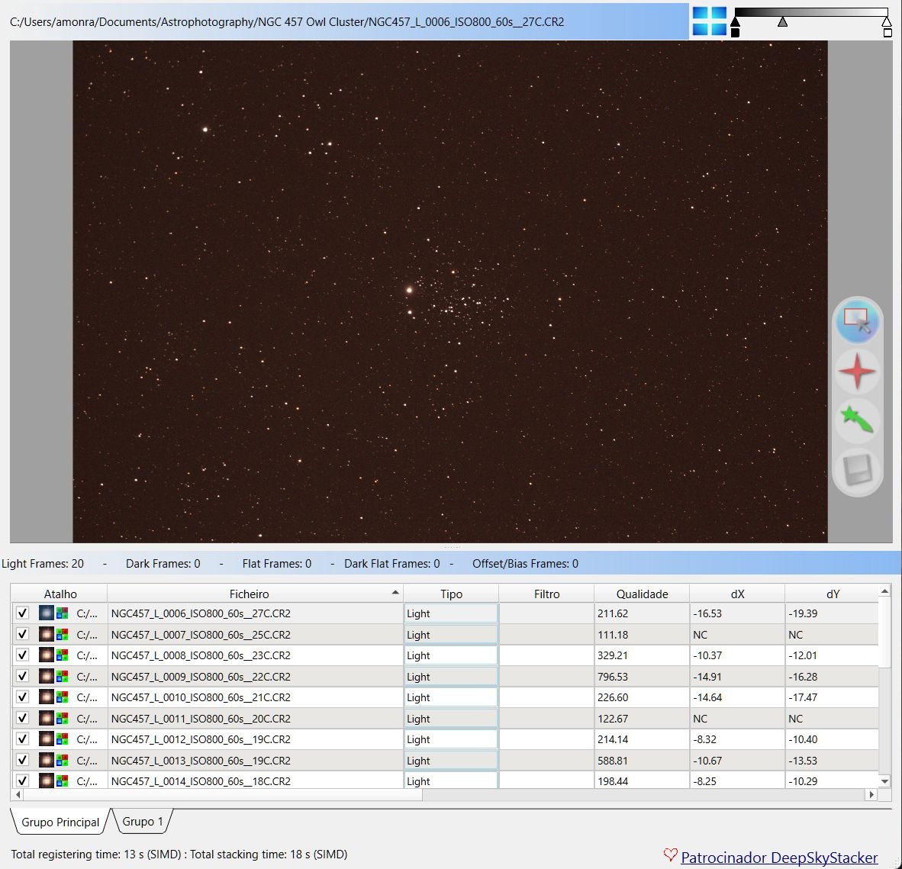 |
A ferramenta de "Cálculo dos
deslocamentos (offsets)", calcula os deslocamentos e a rotacão angular entre as
imagens, sem iniciar o processo de integração. Uma vez calculados os
deslocamentos dX, e dY e os ângulos, as colunas da listagem das imagens serão
preenchida com esses valores de offsets e ângulo de rotação.
Nota: Não é necessário calcular
os deslocamentos manualmente antes do processo de integração, de qualquer forma
os deslocamentos e a rotação angular são calculados automaticamente antes do
processo de integração.
A
ferramenta "Verificar pontuação acima do limite (threshold)..." pode ser usada
para verificar todas as imagens quaisquer que sejam as pontuações maiores do que ou iguais aos
valores dados pelo threshold..
|
Antes do
processo de integração uma tela recapitula os diferentes passos.
E importante saber que as
imagens fotográficas dos objetos astronômicos (Light Frames) serão
automaticamente associadas aos seus Dark Frames, empregando a
sensibilidade ISO e tempo de exposição.
Flat Frames
e Bias/Offset Frames serão automaticamente associadas levando em
consideracão apenas a sensibilidade ISO.
Em cada caso a melhor combinaçãoo de imagens
fotográficas será proposta e uma advertência será anunciada caso a
sensibilidade ISO e/ou o tempo de exposição não forem correspondentes.
|
É
possível temporariamente "forçar" a sensibilidade ISO e o tempo de
exposição usando o contexto do menu dos
arquivos. |
Nessa caixa de diálogo também pode-se alterar o método
de integração para cada tipo de imagem, clicando diretamente na ligação
(link) ou no botão "Parâmetros de Integração". |
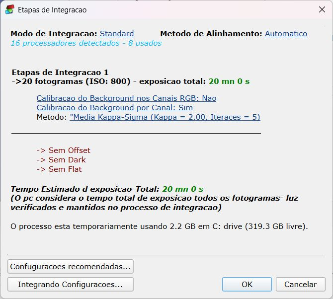
|
|
Uma nova caixa de diálogo é aberta, a partir da qual
pode-se modificar a pasta onde são criados os arquivos temporários
necessários para o processo de integração e todas as configurações de
controle para o processo de integração.
A primeira Aba para o modo de integração tem a
possibilidade de usar o retângulo
personalizado.
Deve-se
observar que em todos os modos de operação os deslocamentos (offsets) são
calculados a partir da imagem fotográfica de referência, pelo que não é o
modo de mosaico verdadeiro, mas um pseudo-mosaico.
Isto também acontece quando se escolhe Drizzle como opção de
integração.
|
A opção Drizzle cria uma
imagem 4 ou 9 vezes maior.
Para a maior parte das imagens já atualmente
grandes, obtidas com câmera DSLR, pode-se criar imagens muito
maiores e o DeepSkyStacker pode precisar muito mais memória e
espaço em disco para processar essas
imagens. |
|
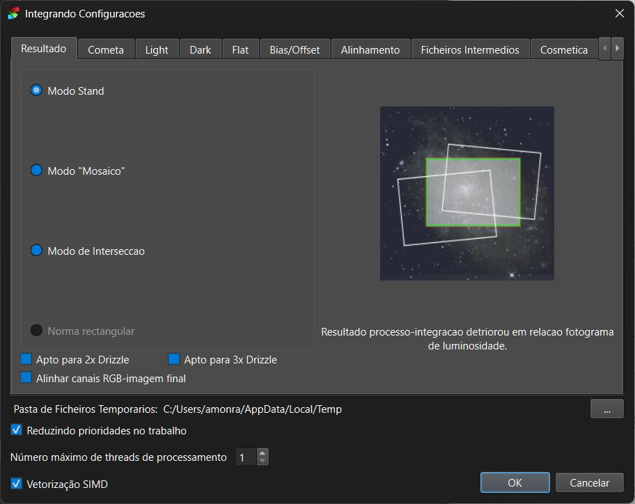
|
|
As outras Abas Light, Dark, Flat e Bias são
utilizadas para modificar o método
de integração para cada tipo de imagem fotográfica, e para ativar a
opção de calibração do
background para as fotografias astronômicas ou a deteção automática e remoção dos
pixels quentes e deteção e remoção de
artefatos para os Dark Frames.
Se todos os seus quadros de luz forem ficheiros FITS
e tiverem dados válidos do Sistema de Coordenadas Mundiais (WCS) nos
cabeçalhos dos ficheiros FITS, a caixa de seleção «Usar dados WCS do FITS»
determina se esses dados serão utilizados para calcular os deslocamentos e
a rotação da imagem em relação ao quadro de referência.
Se estiver marcada, os deslocamentos e a rotação da
imagem em relação ao quadro de referência serão derivados dos dados WCS, o
que é muito rápido; por outro lado, se não estiver marcada, os
deslocamentos e a rotação serão calculados comparando a localização das
estrelas no quadro de referência com a imagem atual, o que é muito mais
lento. |
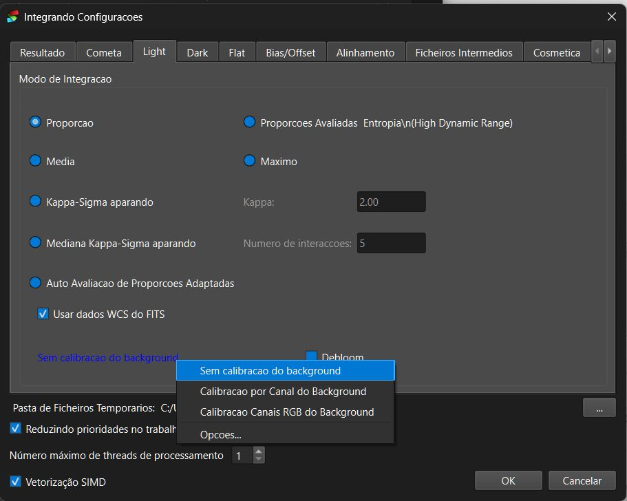
|
|
A Aba de alinhamento pode ser usada para alterar o
método empregado para alinhar as fotografias.
Pode-se escolher o método de transformação Bilinear,
Biquadrado ou Bicúbico ou pode-se deixar o DeepSkyStacker selecionar o
melhor método de transformação baseado no número de estrelas disponível na
imagem.
|
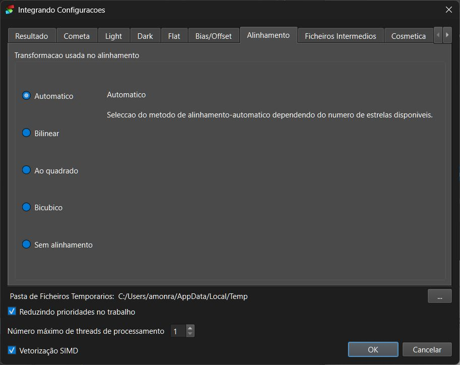
|
|
Esta Aba é usada para o controle e a criação dos
arquivos intermediários.
Podem ser usadas duas opções para criar arquivos
contendo imagens intermediárias:
A primeira opção pode ser usada para criar um arquivo
contendo a imagem de calibração para cada fotografia.
A segunda opção pode ser
usada para criar um arquivo contendo a calibração e o registro das imagens
para cada fotografia.
Os arquivos criados possuem
o nome e a localização da combinação das fotografias com as respectivas
extensões .cal.tif ou .cal.fts para as imagens calibradas e as extencoes
.reg.tif ou .reg.fts para as imagens registradas e calibradas.
Os arquivos são sempre no
formato descomprimido TIFF ou FITS , monocromáticos ou a cores, formato de
8, 16 ou 32 bits dependo da quantidade de bits das fotografias
astronômicas (Light Frames).
|
Quando selecionar uma destas opções tenha a
certeza de ter disponível espaço em disco HD suficiente para salvar
todos os arquivos criados. |
|
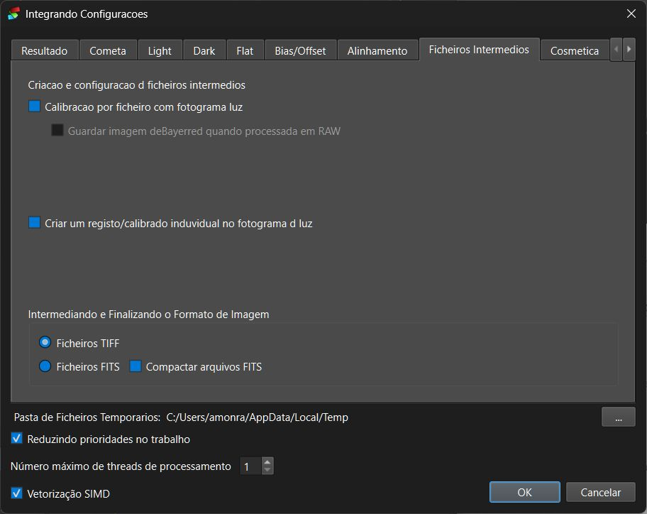 |
|
A Aba
Cosmética serve para controlar a forma em que as imagens calibradas são
limpas antes da integração.
O objetivo é detectar e limpar os pixels quentes ou
pixels frios que permaneceram depois da calibração.
Selecionando estas opções pode sériamente alterar a
imagem resultante assim, usar essa ferramenta com precaução.
Sao necessários dois parâmetros para definir os
procedimentos na cosmética de limpeza.
O primeiro parâmetro é o tamanho do filtro usado para
detectar e limpar os pixels quentes ou frios. Os filtros maiores, demoram
mais tempo no processamento e resultam numa imagem mais esfumaçada e
indistinta ( pouco nítida).
O segundo parâmetro é o limite (threshold) abaixo do
qual não é feita qualquer correção (o valor do pixel permanece o
mesmo).
Um valor reduzido do threshold significa
que mais correções serão realizadas.
A última opção pode ser selecionada para criar uma
imagem mostrando os pixels limpos para cada fotografia astronômica (Light
Frames).
Nessa imagem, os pixels quentes limpos
ficam na cor branca, os pixels frios limpos ficam cinzento escuro e com
todos os outros pixels ficam cinzento claro.
Os
arquivos criados tem o nome e a localização coincidentes com a pasta das
imagens fotográficas com as extensões .cosmetic.tif ou .cosmetic.fts
conforme definidas previamente na Aba.
|
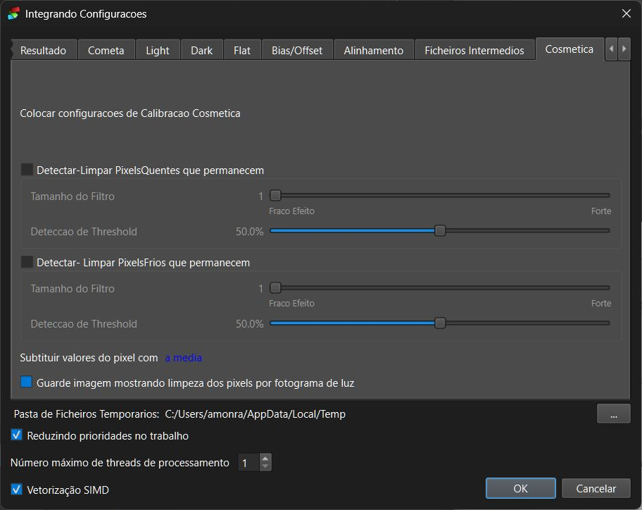 |
|
A Aba dos
cometas fica disponível quando existem pelo menos duas imagens
fotográficas (incluindo a fotografia de referência) e que tenha registrado
um cometa.
Neste caso a Aba do cometa é usada para selecionar um
dos três modos disponíveis de integração do cometa.
Veja o tópico sobre a Integração do cometa em
informações de Detalhes Técnicos que ensina como usar a integração para os
cometas. |
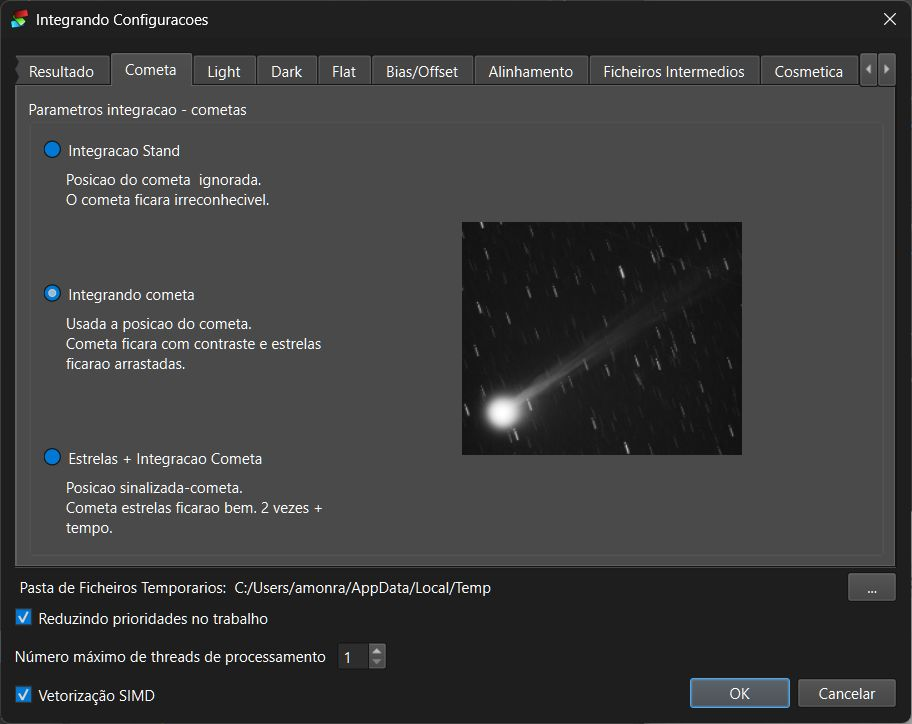 |
Depois do processo de integração, a imagem resultante é
salva no arquivo AutoSave.tif que é criado na pasta das fotografias de
referência.
Se um arquivo Autosave.tif existe na pasta,
será criado um outro. Exemplo: Autosave001.tif (002, 003, ...).
Integrando em Batelada
A
caixa de diálogo Integrando em Batelada (Batch) é usada para criar imagens
resultantes de mais de uma integração.
|
Por exemplo, pode ser usada para criar imagens
resultantes das imagens obtidas separadamente nas cores vermelho, verde,
azul e de luminância, sem a necessidade de carregar individualmente cada
uma dessas listas e repetir o processo de integração de cada uma delas.
Claro que esse método pode
ser usado para o processo de integração de qualquer lista de arquivos.
Só é necessário adicionar
previamente a lista de arquivos criados pelo comando "Salvar Lista de
arquivos" nessa lista.
Cada lista de arquivos
verificada será processada.
No final do processo de integração, o nome dos
arquivos resultantes subtituirão os nomes de todos os arquivos para cada
lista de arquivo processada.
Nota:
|
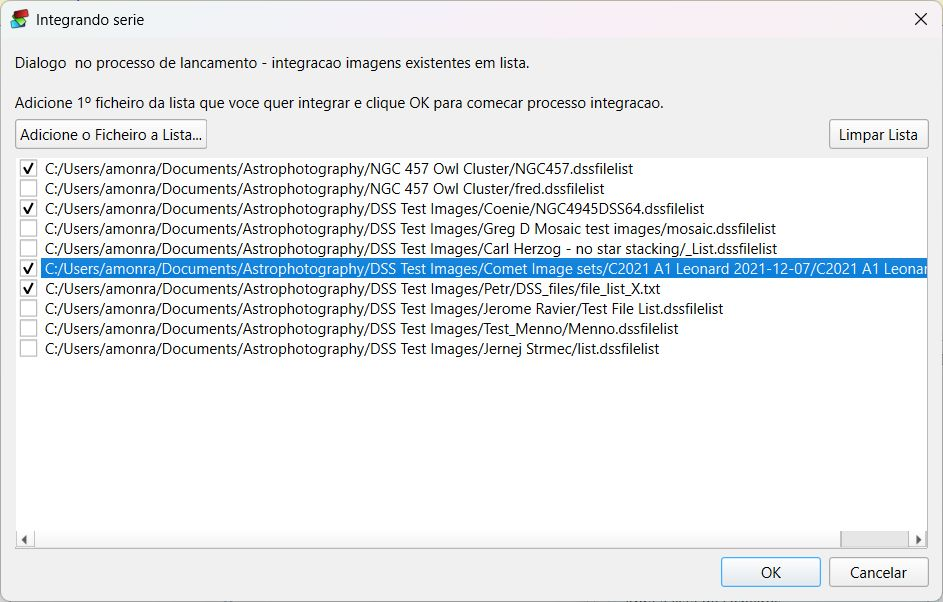 |
Aba do Processamento
A aba
de processamento contém os comandos e recursos relacionados ao
pós-processamento.
|
Gostaria de enfatizar que o DeepSkyStacker permite apenas
um ajuste simples de distorção e equilíbrio de cores da imagem para que
você possa visualizar o resultado do processo de
empilhamento. No entanto, se não houver gradiente de fundo, é possível
obter um resultado bastante aceitável usando apenas as ferramentas
fornecidas aqui.
Qualquer pós-processamento complexo deve ser realizado em
outro software específico para essa
tarefa.
A aba de processamento contém uma pré-visualização do
histograma RGB, uma aba que permite aplicar um alongamento de imagem com a
Função de Transferência de tons Médios (MTF), uma aba que permite aplicar
uma distorção de imagem por tamanho hiperbólico inverso (ASinH) e outra
aba que permite ajustar o equilíbrio de
cores.
Se você deseja ajustar o equilíbrio de cores, primeiro
ajuste os parâmetros de distorção e aplique a distorção. Em seguida,
acesse a aba de equilíbrio de cores, faça os ajustes e
aplique-os.
|
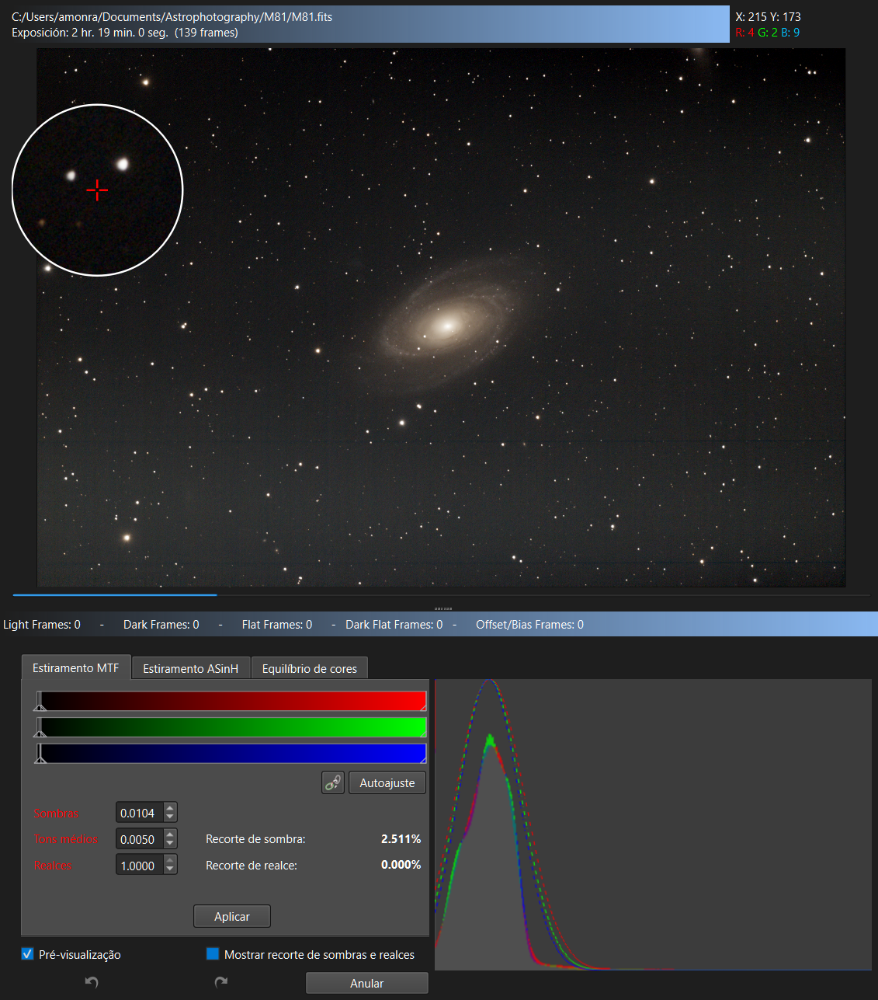 |
|
A transformação da Função de Transferência de tons
Médios (MTF) ou o alongamento
A transformação MTF (ou alongamento) é uma das
ferramentas de alongamento de imagem mais poderosas
disponíveis.
A ferramenta apresenta-se sob a forma de três
controles deslizantes para cada cor primária, que podem ser movidos para
transformar a imagem. Se o botão «ligar» (à esquerda do botão
Estiramento automático) estiver definido como «ligado», os controles
deslizantes das três cores ficam interligados; se estiver definido como
«desligado», os controles deslizantes de cada cor são
independentes.
As alterações do controle deslizante da esquerda
aplicam-se ao sinal de sombra, o do meio ajusta o equilíbrio dos tons
médios e o da direita ajusta os realces. Os valores destes
controles deslizantes são exibidos abaixo dos controles deslizantes, no
lado esquerdo do separador, como caixas de seleção que estão ligadas às
definições dos controles deslizantes. Pode editar diretamente
os valores nas caixas de seleção, ou utilizar as teclas Page-Up e
Page-Down para alterações gerais, ou as teclas de cursor para cima e para
baixo para alterações mais precisas.
Se os controles deslizantes estiverem ligados, o
texto à esquerda das caixas de seleção é apresentado na cor normal do
«texto». Se não estiverem ligados, a cor do texto corresponde
à cor principal para a qual os ajustes estão atualmente ativos.
À direita das caixas de seleção é apresentada a
percentagem de píxeis que são cortados pela transformação, uma vez que,
idealmente, se pretende minimizar a quantidade de corte criada pela
transformação.
O controlo deslizante de sombra (à esquerda) define o
ponto de recorte preto, o que permite escurecer o fundo da imagem cortando
a extremidade esquerda do histograma, removendo assim o ruído do sensor e
estabelecendo um ponto preto verdadeiro. Arrastar este
controlo deslizante ligeiramente para a direita ou utilizar a caixa de
seleção Sombras para aumentar a configuração irá escurecer o fundo da
imagem. Não exagere, pois caso contrário poderá perder
nebulosidades ténues ou detalhes de sombra.
O
controlo deslizante de equilíbrio dos tons médios controla a função MTF,
que mapeia os valores dos píxeis de entrada x (entre 0 e 1) para valores
de saída y. Esta função é formalmente expressa como:
(m - 1)x
y = -------------
(2m - 1)x - m
onde m é o valor do controlo deslizante de equilíbrio
dos tons médios.
-
m = 0.5: Mantém os tons médios da imagem
inalterados (função identidade).
-
m < 0.5: Ilumina os tons médios (desloca
a curva para a esquerda).
-
m > 0.5: Escurece os tons médios (desloca
a curva para a direita).
O controlo deslizante à direita ou a caixa de seleção
«Destaques» define o ponto branco.
Para além dos ajustes manuais descritos acima, existe
um botão «Autostretch». O seu comportamento varia ligeiramente
consoante a configuração do botão «link» (imediatamente à esquerda do
botão «Autostretch»). Quando «linked» está ativado, as
estatísticas da imagem utilizadas para calcular os parâmetros de
alongamento a aplicar são calculadas como uma média dos três canais, o que
resulta na preservação do equilíbrio de cores existente.
Quando «linked» está definido como falso, as
estatísticas são calculadas por canal, o que significa que os canais de
cor são esticados independentemente, resultando numa neutralização
implícita do fundo que tende a remover dominantes de cor.
Por fim, é possível ajustar os parâmetros utilizados
para calcular o autostretch clicando com o botão direito do rato no botão
Autostretch. Estes controlam o nível de não linearidade aplicado pelo
processo de autostretch.
O
parâmetro «Target Background» define a luminosidade mediana do céu de
fundo após o alongamento. O intervalo teórico é [0,0; 1,0], com um valor
predefinido de 0,125. Para obter um resultado aceitável, deverá
provavelmente definir um valor entre 0,125 e 0,25.
O
parâmetro Shadow Clipping controla a que distância abaixo da mediana o
ponto preto deve ser definido. O valor é expresso em unidades de
Desvio Absoluto Mediano (MAD), que é uma medida estatística robusta da
variabilidade dos dados. Ao contrário do desvio padrão, que é
altamente sensível a valores extremos, o MAD mede a distância típica da
mediana e é completamente resistente a valores atípicos.
Se a caixa de
seleção «Pré-visualizar» estiver marcada (configuração predefinida), ao
ajustar os parâmetros (editando diretamente os campos dos campos de
seleção, ou selecionando o campo de seleção ou o controlo deslizante e
utilizando as teclas Page Up e Page Down para alterações gerais, ou as
teclas de seta para cima e para baixo para alterações mais precisas), a
imagem e o histograma apresentados mudarão para refletir as alterações nos
parâmetros. No entanto, para aplicar efetivamente as alterações, é
necessário clicar no botão «Aplicar». |
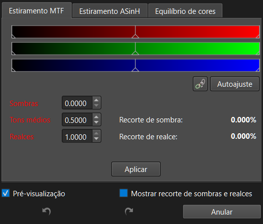 |
|
A transformação ou alongamento ASinH
A transformação ASinH amplifica as
áreas mais escuras da imagem. Os parâmetros são o fator de alongamento (ou beta), o
valor do ponto preto e se deve ou não usar a "luminância ponderada
humana". Para imagens monocromáticas, os valores dos pixels são
modificados usando a seguinte
função:
pixel = (original - ponto preto) × asinh(original ×
alongamento)
--------------------------------------------------------
original × asinh(alongamento)
Para imagens coloridas, a função se
torna:
pixel = (original - ponto preto) × asinh(rgb_original ×
alongamento)
------------------------------------------------------------
rgb_original × asinh(alongamento)
O fator de alongamento (também conhecido como beta) pode
assumir valores entre 0,0 e 1000,0. Valores maiores resultam em um maior grau de alongamento
da imagem.
O valor do "ponto preto" tem um intervalo de [00000,
0,20000]. O valor 0,2 implica que o ponto preto está definido para
20% do valor ADU máximo possível. Valores abaixo do ponto preto são tratados como
preto.
Como o rgb_original é uma média dos três canais de cor, um
ou dois valores de canal serão maiores que o rgb_original e, portanto,
poderão sofrer recorte. Para mitigar esse problema, o algoritmo de mistura RGB
(desenvolvido pelos autores da ferramenta GHSAstro para ajustar o "ganho"
aplicado aos canais) é usado para garantir que esse recorte não
ocorra.
Quando a opção de luminância ponderada pelo ser humano não
está marcada, o rgb_original é a média dos três valores de
pixel; Quando configurado, o peso muda para 0,2126 para o valor
vermelho, 0,7152 para o valor verde e 0,0722 para o valor azul, o que
resulta em cores mais próximas da percepção
humana.
Se a caixa de seleção "Visualizar" estiver marcada
(configuração padrão), ao ajustar os parâmetros (editando os campos da
caixa de seleção diretamente ou selecionando a caixa de seleção ou o
controle deslizante e usando as teclas Page Up e Page Down para ajustes
mais amplos ou as setas para cima e para baixo para ajustes mais
precisos), a imagem e o histograma exibidos serão atualizados para
refletir as alterações nos parâmetros. No entanto, para aplicar as alterações, é necessário
clicar no botão "Aplicar".
Observe que o alongamento é "multiplicativo"; portanto, se
você aplicar um alongamento de 200,0 e, em seguida, aplicar um alongamento
de 10,0, o alongamento efetivo da imagem será de
2000,0. |
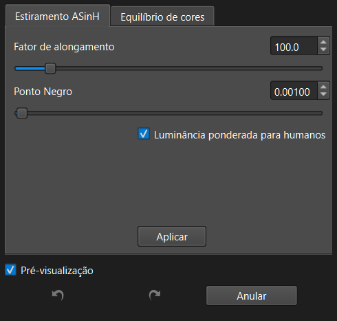 |
|
Histograma RGB
O histograma RGB
permite visualizar a distribuição dos valores de pixel para cada canal (R,
G, B) na imagem.
Além disso, uma curva gaussiana para cada canal é
desenhada sobre os dados do
histograma.
Você pode usar a aba Equilíbrio de Cores (veja abaixo)
para ajustar o equilíbrio de cores da imagem, o que resultará na
atualização do histograma. |
 |
|
Ajuste de equilíbrio de cores
A aba Equilíbrio de Cores permite
ajustar o balanço de cores da imagem.
Você deve fazer esse ajuste após aplicar qualquer
distorção de imagem. Se a caixa de seleção Visualizar estiver marcada
(configuração padrão), ao ajustar os parâmetros (selecionando o controle
deslizante apropriado e usando as teclas Page Up e Page Down para ajustes
mais amplos ou as teclas de cursor para ajustes mais precisos), a imagem
exibida e o histograma serão atualizados para refletir as alterações no
Equilíbrio de Cores. No entanto, assim como no caso da distorção de imagem,
para aplicar as alterações, você precisa clicar no botão
Aplicar. |
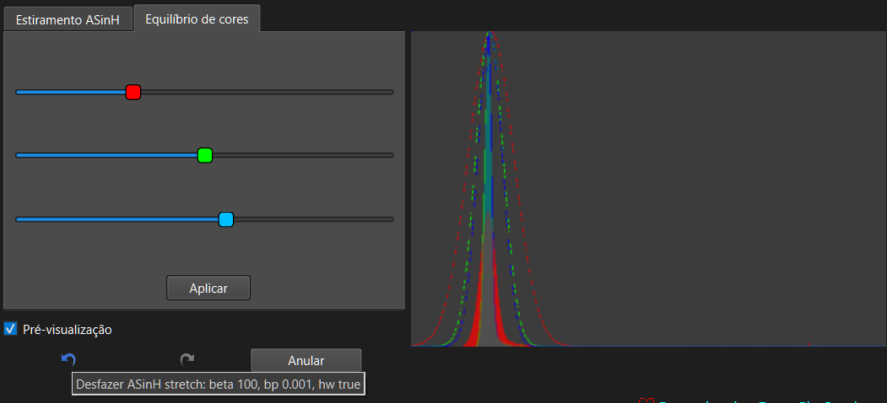 |
|
Ajuste de saturação
A guia “Saturação” permite ajustar
a saturação e a vibração das cores da imagem. Normalmente, é recomendável
usar essa opção após aplicar um MTF Stretch, pois, ao contrário do ASinH
Stretch, essa transformação tende a desaturar imagens coloridas.
O controle deslizante de saturação
controla a saturação geral das cores, permitindo que você a diminua
ligeiramente ou a aumente. O controle deslizante de vibração
permite que você realce seletivamente a intensidade das cores suaves e
menos saturadas na imagem.
Se a caixa de seleção
“Pré-visualização” estiver marcada (configuração padrão), ao ajustar os
parâmetros (selecionando o controle deslizante apropriado e usando as
teclas Page-Up e Page-Down para alterações gerais, ou as teclas de cursor
para ajustes mais precisos), a imagem exibida e o histograma serão
atualizados para refletir as alterações feitas. No entanto,
assim como no alongamento da imagem, para aplicar efetivamente as
alterações, é necessário clicar no botão “Aplicar”.
|
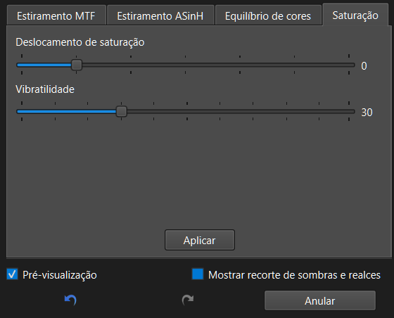 |
Desfazer/Refazer
ajustes
Na parte inferior de cada aba, você encontrará um conjunto de
botões:
-
para aplicar as últimas modificações à
imagem
-
para desfazer as últimas modificações
aplicadas
-
para refazer as últimas modificações
desfeitas
-
para redefinir todos os valores
Carregando uma
imagem
O DeepSkyStacker pode carregar imagens TIFF (8, 16 e 32 bits;
monocromáticas ou RGB) ou imagens FITS (8, 16, 32 e 64 bits; monocromáticas ou
RGB). Ao final do processo de empilhamento, a imagem criada é
carregada automaticamente.
Salvar a imagem
resultante
|
O DeepSkyStacker pode salvar a imagem resultante como
arquivos TIFF ou FITS de 16 ou 32 bits usando dois
métodos:
-
Aplicando os ajustes: Isso salva a imagem com todas as
alterações feitas usando o botão "Aplicar". Use esta opção se você pretende fazer ajustes adicionais
em outro software.
-
Não aplicando os ajustes: Isso salva a imagem sem
nenhuma das alterações feitas usando o botão "Aplicar".
Use esta opção se você pretende fazer todo o
pós-processamento em outro software. |
|
Para mais
informações sobre os métodos de salvar, pode ver o arquivo de Perguntas e
Respostas Frequentes PRF.
Criar uma máscara de estrela
Uma
máscara de estrela é muito útil durante o pós-processamento para usar diferentes
técnicas de tratamento para as estrelas e para o resto da imagem.
Esta ferramenta pode ser usada para mais tarde para criar
uma variedade de máscaras de estrelas para uso no pós-processamento ( Photoshop,
PixInsight, ...).
DeepSkyStacker apenas cria
arquivos de máscara de estrelas. De qualquer maneira, não faz o uso delas.
Deve ser vista como uma ferramenta com a intenção de
providenciar de forma simples e rápida a máscára de estrelas baseada na real
deteção das estrelas.
|
O que é uma máscara de
estrela ?
Uma máscara de estrelas é uma imagem
sintética em escala de cinzentos em que qualquer estrela suficientemente
brilhante é subtituída por uma área igual de pontos brancos que vai
escurecendo rápidamente nas bordas até atingir a cor preta.
Pode ver um exemplo de uma
máscara de estrelas na direita.
Passe o mouse e
veja aqui e aqui. |

Star
Field
|
|
Criação de uma máscara de
estrelas
Para criar uma máscara de estrelas
tem que carregar uma imagem através da Aba do Processamento.
Depois clique em " criar uma máscara de estrela " ...
no menu da direita e uma caixa de diálogo sera aberta.
Partindo daqui pode alterar a forma das estrelas na
máscara, o limite (threshold) de deteção do número de estrelas e outros
parâmetros.
Uma vez feito, clique no botao OK e sera solicitado
para escolher um arquivo (tipo TIFF ou FITS ) em que a máscara de estrelas
sera salva.
O arquivo salvo ficará sempre com a imagem em tons de
cinzento de 16 bits. Observar que o mesmo não sera carregado
automaticamente pelo DeepSkyStacker.
A máscara de estrelas e sempre criada a partir de uma
imagem que tenha sido visualizada no DeepSkyStacker com as devidas
correções e ajustes aplicadas. |
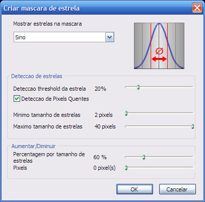 |
Lista de Imagens
Esta lista comum aos processos de registro e integração,
contem todas as imagens usadas nestes processos:
-
Fotografias dos objetos astronômicos, Light frames
-
Fotografia escura, Dark frames
- De campo plano claro,
Flat frames
- De artefatos do sensor, Bias/Offsets
frames
Somente as imagens
verificadas sao usados para o processo de registro e integração.
Veja a lista com os detalhes
descritos abaixo:
| Caixa de verificação |
verifica se a imagem pode ser
usada |
| Caminho |
Caminho para o arquivo de imagems |
| arquivo |
Nome do arquivo de imagem |
| Tipo |
Imagem Tipo:
Light
Dark
Flat
Dark Flat
Bias |
| Contagem |
Cálculos feitos na imagem pelo computador
no processo de registro ou
N/A para o dark, flat
e bias/offsets frames.
Quando a fotografia for
selecionada como de referência usando o contexto do menu, a
contagem é prededida por (*). |
| dX |
Deslocamento em X (offset em pixels) calculados para
o processo de integração |
| dY |
Deslocamento em Y (offset em pixels)
calculados para o processo de integração |
| Ângulo |
Rotaçãoo angular (em graus - °) calculada para o
processo de integração |
| Tempo/Data |
Tempo e Data do Arquivo |
| Tamanho |
Tamanho da imagem em pixels (Largura x
Altura) |
| CFA |
Sim se a imagem for obtida através do
processo Color Filtro Array (CFA) como é o caso de todas as imagens RAW
que usam a Matriz de Bayer . |
| Profundidade |
Tipo (níveis de cinzento ou RGB) e número de bits por
canal da imagem. |
| Info |
Informação extra acerca da imagem (RAW
como a informação da câmera DSLR, formato TIFF ou Outras
informações) |
| Sensibilidade ISO |
Sensibilidade ISO empregada para obter a
imagen |
| Exposição |
Tempo de exposição da imagem |
| FWHM |
FWHM: Largura Total da Metade do valor Máximo. (Full
Width Half Maximum value - em pixel)
Valor médio
para todas as estrelas detectadas. |
| #Estrelas |
Número de estrelas detectadas.
Quando aplicado a posição de um cometa o símbolo +(C)
é anexado ao número de estrelas |
| Sky Background |
Valor do Sky background em % para a imagem
registrada |
Pode
alterar a ordem de qualquer das colunas na tabela através de clique no cabeçalho
da coluna (e clicando novamente para reverter a ordem da tabela).
A ordem das colunas e tamanho
também podem ser alterados. Todas essas alterações serão salvas pelo
DeepSkyStacker e recarregados no próximo uso do programa.
Você pode pré-visualizar a imagem
selecionando-a da lista.
Se a imagem selecionada é um
arquivo tipo RAW, as configurações RAW DDP serão usadas para descodificar este
arquivo antes da visualizaçaõ.
|
Podem
ser selecionados multiplos arquivos da lista.
Um menú de contexto esta disponível (botão direito do
mouse) para selecionar manualmente a fotografia de referência para o
processo de integração, modificar o tipo de arquivo, verificar ou não
verificar os arquivos,remover arquivos da lista de imagens ou
visualização, editar as propriedades dos arquivos, copiar a lista de
conteúdo para o clippboard ou definitivamente apagar os arquivos do HD.
|
Se
você selecionar uma fotografia para referência que não foi
verificada, os deslocamentos (offsets) serão calculados a partir
desta fotografia, ainda que esta fotografia não participe do
processo de
integração. |
|
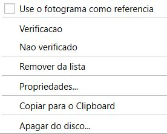
|
|
O diálogo das propriedades também pode ser usado para
alterar o tipo de imagem, e temporariamente (apenas durante a presente
operação) a sensibilidade ISO e o tempo de exposição de uma ou mais
imagens.
Quando alteramos
a sensibilidade ISO e o tempo de exposição, não são feitas alterações nos
arquivos. Esses valores são apenas armazenados na memória durante a
presente operação. |
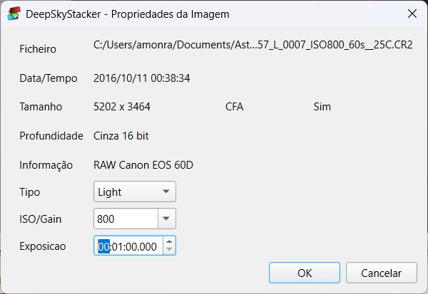 |
Pré-visualização da imagem
É usada para a rápida visualização da imagem da lista de
imagens (Aba de Registro e Aba de integração) ou para ver a imagem que está
sendo processada (Aba do processamento).
Pode-se aumentar ou diminuir o zoom da imagem através da
roda do mouse. Esta é a única maneira de obter a visão panorâmica e o zoom da
imagem.
Edição de estrelas e cometas
|
Quando uma fotografia de objeto astronômico (Light
Frame) está selecionada na Aba do registro e integração, é
possível:
-
Editar a posição das estrelas:
estrelas detectadas pelo DeepSkyStacker
serão coloridas de verde. Você pode selecionar estrelas
extras ou deselecionar algumas que o DeepSkyStacker detectou clicado com
o botão esquerdo do mouse.
-
Editar a posição do
cometa
-
Pode selecionar qualquer um dos
modos acima mencionados utilizando a Aba de ferramentas do lado direito da
imagem.
O último item é usado para salvar as
alterações.
|
Nota:
Editando o cometa:
O centro do cometa
pode não ser automaticamente detectado pelo DeepSkyStacker.
Para forçar o
cometa a uma presente posição mantenha pressionada a tecla Shift do teclado enquanto posiciona com o
mouse o cometa no centro. |
|

|
|
Quando se utiliza a pré-visualização da imagem a
partir da Aba do processamento, é possível selecionar uma parte da imagem
desenhando um retângulo diretamente sobre a imagem.
Este retângulo, pode ser usado para aplicar os
ajustes apenas nessa área da imagem e por outro lado, opcionalmente, para
salvar apenas essa parte da imagem.
Se não for definido um retângulo os ajustes serão
então aplicados a toda a imagem.
Em qualquer caso, quando a imagem for salva no HD os
ajustes serão aplicados a toda a imagem.
|

|
Configurações do DDP
A caixa de diálogo das configurações DDP permite acessar
todos os parâmetros utilizados para o desenvolvimento dos arquivos em
imagem.
|
Image Adjustment (or
Colour Adjustment)
Os parâmetros são:
-
O brilho geral da imagem, que se aplica ao canal
verde.
-
O brilho dos canais vermelho e azul em relação ao canal
verde.
O Ajuste de Imagem (ou Ajuste de Cor) é aplicado após a
imagem ser lida e dimensionada adequadamente para o tipo de imagem (RAW,
FITS ou TIFF) e após todos os quadros de calibração terem sido
aplicados. Se você usar esses ajustes, à medida que aumentar os
valores além do valor padrão de 1,0, mais pixels ficarão
saturados.
O ajuste de brilho (ou luminância) se aplica igualmente
aos três canais. Os valores dos fatores de escala vermelho e azul são relativos ao canal verde, cujo fator de escala é o
valor de brilho.
Se você
deseja dimensionar arquivos TIFF ou FITS de 12 bits para 16 bits, isso
pode ser feito definindo um valor de brilho de
16.
Isso também pode ser útil se você quiser definir o
equilíbrio de canais para arquivos TIFF nos formatos FITS ou CFA, com base
na documentação da sua câmera. |
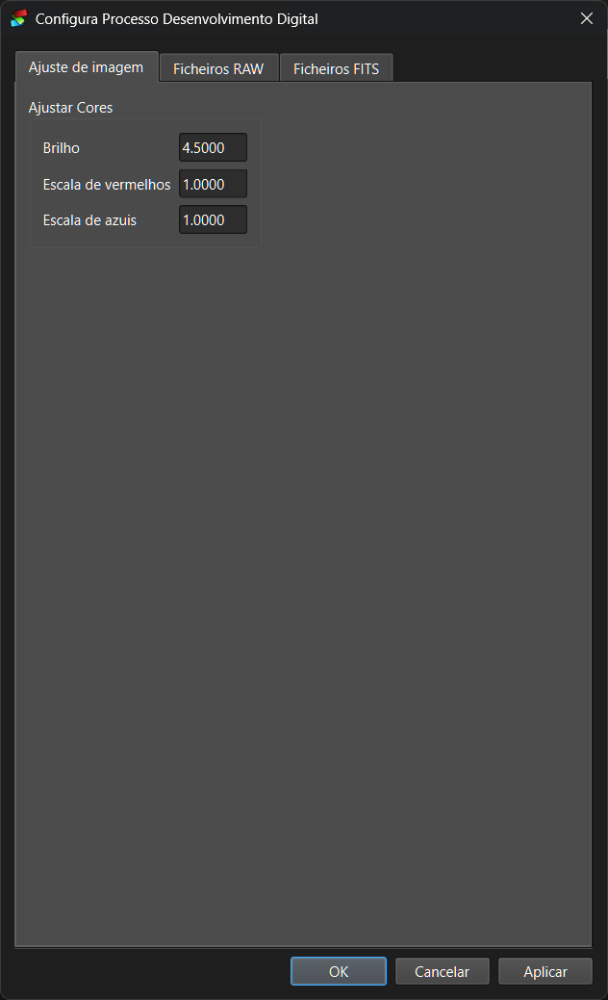 |
|
Arquivos RAW
Os parâmetros são:
Por padrão, o DeepSkyStacker usará o Balanço de Branco
para Luz do Dia, a menos que "Sem Processamento de Balanço de Branco" ou
"Usar Balanço de Branco da Câmera" esteja selecionado. Se você selecionar "Sem Processamento de Balanço de
Branco", nenhum ajuste de balanço de branco será realizado, o que é
desejável se você estiver usando um software como o StarTools para
pós-processar suas imagens empilhadas.
Na maioria dos outros casos, recomendamos o uso do Balanço
de Branco para Luz do Dia.
Câmaras DSLR de
astrofotografia de fabrico original
No caso de câmaras especializadas, como a Canon EOS 20Da /
60Da / Ra e a Nikon D801A, deve configurar a câmara para utilizar o
equilíbrio de brancos «Daylight» e selecionar «Use Camera White Balance»
no DeepSkyStacker. Os coeficientes do equilíbrio de brancos
«Daylight» no ficheiro RAW garantirão uma reprodução correta das cores
neste caso.
Escolher «Usar Equilíbrio de Brancos para Luz do Dia» para
uma EOS 60Da (por exemplo) resultará num tom rosado distinto.
A razão para isso é que o ficheiro RAW indica que a câmara é uma EOS 60D
(e não uma 60Da), o que significa que o LibRaw utiliza os coeficientes de
equilíbrio de brancos para a EOS 60D, que não são corretos para uma EOS
60Da.
DSLRs modificadas para astrofotografia (modificação
H-Alpha)
Provavelmente deverá selecionar «Usar equilíbrio de
brancos de luz do dia» para este tipo de câmara, mesmo que isso resulte
num tom rosado distinto que terá de remover no pós-processamento. Não há
forma de o DSS resolver isto automaticamente.
Equilíbrio de brancos
automático
A opção "Usar Balanço de Branco Automático" não é mais
suportada, pois resultava em cada quadro com seu próprio balanço de branco
exclusivo, o que prejudicava o processamento de quadros escuros e
planos. No entanto, se você realmente deseja usar o Balanço de
Branco Automático, configure sua câmera para Balanço de Branco Automático
e selecione "Usar Balanço de Branco da Câmera".
Os valores de ajuste do
balanço de branco são extraídos dos arquivos RAW através da
biblioteca LibRaw Copyright
© 2008-2019 LibRaw LLC. A biblioteca LibRaw é baseada
sobre o original DCRaw decoder para arquivos RAW escrito pelo Dave Coffin.
Acerca do modo de interpolação e aos
procedimentos específicos de otimização da Matriz de Bayer estão
disponíveis em detalhes técnicos .
|
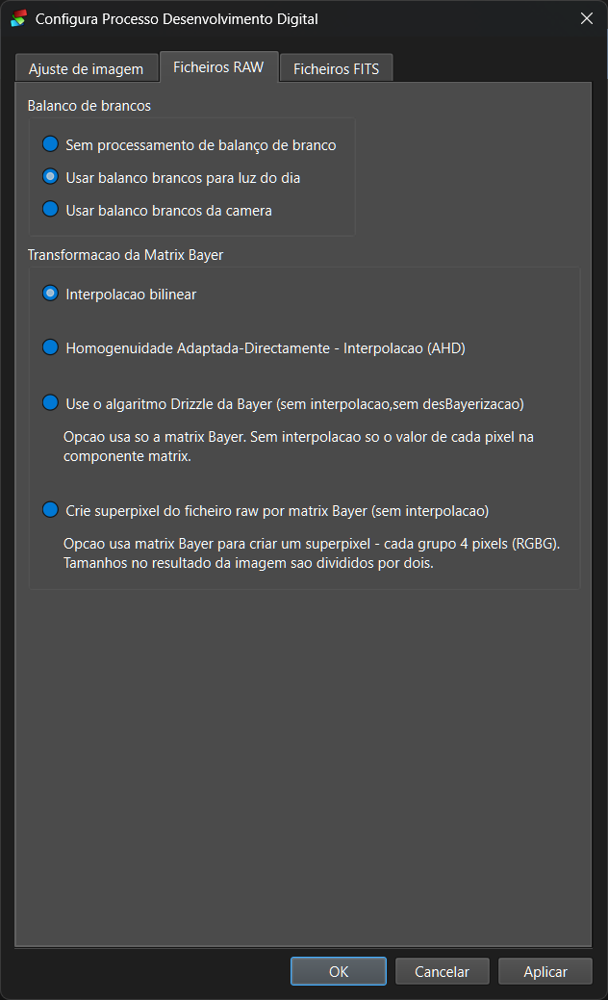 |
|
Arquivos FITS
Se a caixa de seleção "Monochromatico 16 bit FITS
Ficheiros RAW ..." não estiver
selecionada, o DeepSkyStacker tentará usar a detecção automática
da matriz CFA com base nas palavras-chave do FITS, como BAYERPAT, COLORTYP
e MOSAIC (para câmeras coloridas Meade DSI). Se o arquivo FITS não contiver essas palavras-chave
ou o padrão incorreto for especificado no arquivo, você poderá marcar a
caixa de seleção e escolher a câmera / padrão a ser usado como nas versões
anteriores do DeepSkyStacker.
O primeiro passo é selecionar na lista o modelo de
câmera DSRL ou CCD usada para criar as imagens fotográficas. Isto é
necessário para usar o padrão correto de filtro da Matriz de Bayer que
será usada para decodificar a imagem e transforma-la do formato B&W
para uma imagem a cores.
Esses parâmetros são:
-
Balanco dos canais RGB
- Modo de interpolação
Acerca do modo da interpolação e dos
procedimentos específicos de otimização do padrão da Matriz de Bayer,
pode-se encontrar mais informações em detalhes
técnicos.
|
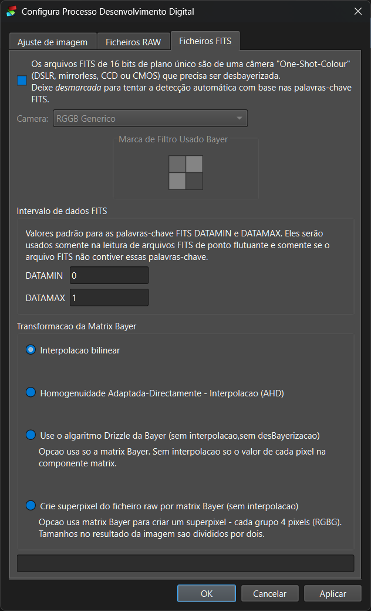 |